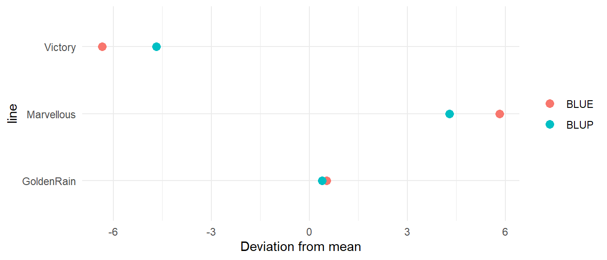
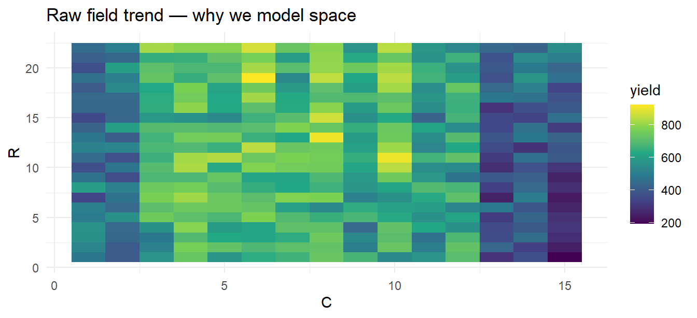

flowchart LR
A[Linear model<br/>y = Xβ + e] --> B[GLM<br/>logistic · counts]
B --> C[Mixed model<br/>y = Xβ + Zu + e]
C --> D[BLUE vs BLUP<br/>shrinkage & h²]
D --> E[Spatial models<br/>AR1×AR1 on field trials]
Week 1 — Linear & Mixed Models
From ANOVA to spatial mixed models on real prairie trials
Dataset: agridat::gilmour.serpentine — a real South Australian wheat trial (Gilmour et al. 1997), the canonical spatial-analysis teaching set, plus Yates’ oats for the split-plot classic.
1 1. The linear model
Code
library(tidyverse); library(agridat); library(lme4); library(emmeans)
oats <- agridat::yates.oats
lm1 <- lm(yield ~ gen + factor(nitro), data = oats)
anova(lm1)Analysis of Variance Table
Response: yield
Df Sum Sq Mean Sq F value Pr(>F)
gen 2 1786.4 893.2 1.9533 0.1499
factor(nitro) 3 20020.5 6673.5 14.5946 2.155e-07 ***
Residuals 66 30179.1 457.3
---
Signif. codes: 0 '***' 0.001 '**' 0.01 '*' 0.05 '.' 0.1 ' ' 1Fixed effects, F-tests — the machinery beneath every ANOVA table you’ve published.
2 2. GLMs in one chunk
Code
# Binomial GLM: disease incidence example (simulated scores on real structure)
set.seed(2)
oats$diseased <- rbinom(nrow(oats), 10, plogis(-1 + 0.02 * scale(oats$yield)))
glm1 <- glm(cbind(diseased, 10 - diseased) ~ gen, family = binomial, data = oats)
summary(glm1)$coefficients |> head(3) Estimate Std. Error z value Pr(>|z|)
(Intercept) -0.99039870 0.1452546 -6.8183638 9.208319e-12
genMarvellous 0.02099815 0.2049330 0.1024635 9.183888e-01
genVictory 0.04179973 0.2044618 0.2044379 8.380113e-01The same idea powers RNA-seq DE (negative-binomial GLM — Week 5).
3 3. The mixed model: y = Xβ + Zu + e
Blocks and genotypes become random effects: they share a distribution, so estimates borrow strength and shrink toward the mean.
Code
mm1 <- lmer(yield ~ factor(nitro) + (1 | gen) + (1 | block), data = oats)
summary(mm1)$varcor Groups Name Std.Dev.
block (Intercept) 15.6540
gen (Intercept) 5.2388
Residual 15.3130 Heritability from variance components (line-mean basis):
Code
vc <- as.data.frame(VarCorr(mm1))
Vg <- vc$vcov[vc$grp == "gen"]; Ve <- vc$vcov[vc$grp == "Residual"]
h2 <- Vg / (Vg + Ve / 3) # 3 blocks
round(h2, 2)[1] 0.26BLUP shrinkage, visualized:
Code
re <- ranef(mm1)$gen; blup <- setNames(re[,1], rownames(re))
blue <- coef(lm(yield ~ gen - 1, oats)) - mean(oats$yield)
tibble(line = names(blup), BLUE = as.numeric(blue)[seq_along(blup)], BLUP = as.numeric(blup)) |>
pivot_longer(-line) |>
ggplot(aes(value, line, colour = name)) + geom_point(size = 3) +
labs(x = "Deviation from mean", colour = NULL) + theme_minimal()
BLUPs sit closer to zero — shrinkage in proportion to reliability. This is what genomic BLUP does with markers.
4 4. Spatial analysis of a real field trial
Code
library(sommer)
data(gilmour.serpentine)
g <- gilmour.serpentine |> mutate(R = as.numeric(row), C = as.numeric(col))
m_base <- mmer(yield ~ 1, random = ~ gen, data = g, verbose = FALSE)
m_spat <- mmer(yield ~ 1,
random = ~ gen + row + col,
data = g, verbose = FALSE)
c(base = m_base$AIC, spatial = m_spat$AIC) base spatial
331.0000 294.9681 The row and column random effects soak up field trend; genotype variance is estimated more cleanly and rankings change — decisions change.
Code
ggplot(g, aes(C, R, fill = yield)) + geom_tile() +
scale_fill_viridis_c() + labs(title = "Raw field trend — why we model space") +
theme_minimal()
5 Interview-grade summary
- Random vs fixed: “Random effects share a distribution; I model genotypes as random to get shrunken BLUPs and variance components for heritability.”
- Spatial: “AR1×AR1 or 2-D splines model field trend; ignoring it inflates error and mis-ranks lines.”
6 Exercises
- Refit
m_spataddingrcov = ~ ar1(R):ar1(C)(AR1×AR1 residuals); compare AIC. - Compute h² from
m_spatvariance components (vpredict). - In Yates’ oats, treat nitrogen as numeric and fit a quadratic response — is the linear model adequate?
Data credits: Gilmour et al. (1997) JABES; Yates (1935), via the agridat package (Kevin Wright).